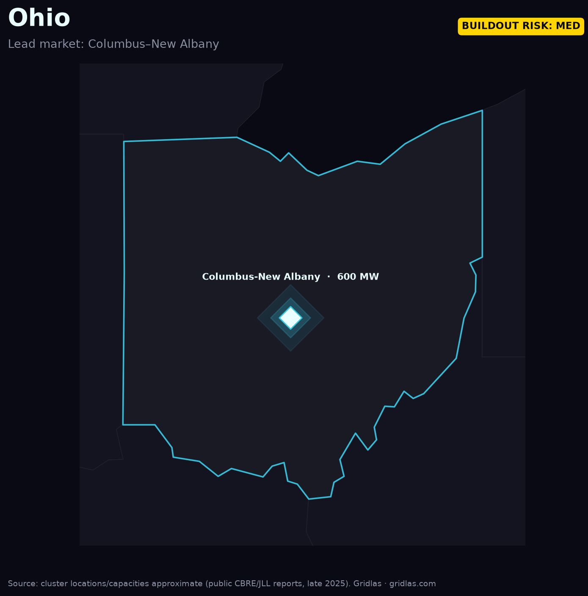

Home / Data centers by region / Central Ohio
The breakout emerging market — where gigawatt-scale hyperscale campuses turned Columbus's suburbs into a national power story.
Central Ohio — New Albany, Hilliard, and the broader Columbus metro — has become the emerging market everyone watches. Gigawatt-scale sites are in development and hyperscalers including AWS have committed multi-billion-dollar campuses, pulling Ohio into the same league as the established primary markets.

The speed of that ramp put AEP Ohio's load forecast under strain and triggered a regulatory fight over who pays for the grid upgrades large loads require — an early test case for the data-center cost-allocation debates now spreading nationwide.
As primary markets like Northern Virginia hit capacity limits, demand spills into secondary markets — and Ohio is first in line. How its regulators handle cost allocation and interconnection will set precedent for every emerging market behind it.
Track the whole map. The Gridlas report covers Ohio and four other regions, with high-res maps and the underlying dataset — built from public EIA, LBNL & ERCOT data.
Get the report →